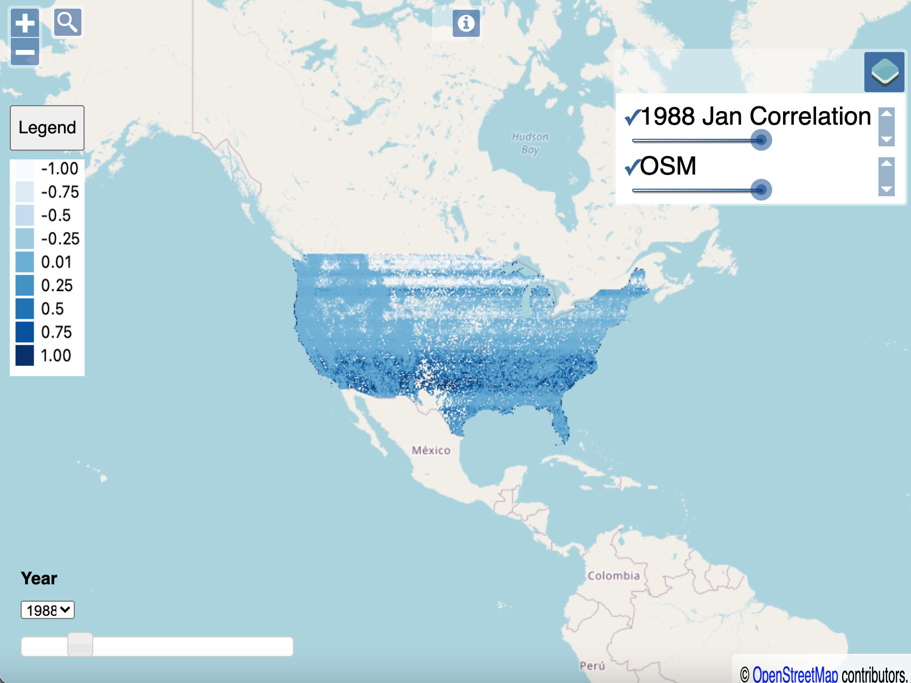

This series is me chronicling my adventure making a data pipeline. This pipe is outlined on GitLab here in the readme: https://gitlab.com/davleifer/polarbearGIS
This is the eleventh part in a series used to build my website: https://www.davidjleifer.com/
Part 1: https://www.davidjleifer.com/blogs/part1.html
Part 2: https://www.davidjleifer.com/blogs/part2.html
Part 3: https://www.davidjleifer.com/blogs/part3.html
Part 4: https://www.davidjleifer.com/blogs/part4.html
Part 5: https://www.davidjleifer.com/blogs/part5.html
Part 6: https://www.davidjleifer.com/blogs/part6.html
Part 7: https://www.davidjleifer.com/blogs/part7.html
Part 8: https://www.davidjleifer.com/blogs/part8.html
Part 9: https://www.davidjleifer.com/blogs/part9.html
Part 10: https://www.davidjleifer.com/blogs/part10.html
Part 12: https://www.davidjleifer.com/blogs/part12.html
Part 13: https://www.davidjleifer.com/blogs/part13.html
Part 14: https://www.davidjleifer.com/blogs/part14.html
With our original time slider for visualizing correlation between the nino34 index and precipitation, we could only view four years. This study employed 33 years between 1981 and 2014. It would be beneficial if we could see them all at once. It’s as easy as 1, 2 , 3!
Step 1: Importing modules and defining our paths
The main changes will be done in the /js/layer/layers/js file of the node application. First we need to do some imports of ol modules. Then we create an “xyz_url” const variable, which contains the url string of the directory containing our XYZ tile files on our GCP server. We also define the XYZ tile ending url string called “xyz_ending”. Then we create an empty “year” const variable and populate the array with strings of years between 1981 and 2014.
Next we create an empty array const variable called xyz_year. We populate that one with a concatenated variable called “staged”, containing “xyz_url”, “year”, and “xyz_ending”.
/** Add layers to the map
*/
import map from '../map';
import TileLayer from 'ol/layer/Tile.js';
import OSM from 'ol/source/OSM';
import LayerGroup from 'ol/layer/Group'
import View from 'ol/View';
import XYZ from 'ol/source/XYZ';
//set up the url
const xyz_url = "https://www.davidjleifer.com/ppt_cor_xyz/ppt_cor_xyz_ppt_pearson_final_"
const xyz_ending = "/{z}/{x}/{y}.png"
//create year array to hold years between 1981 and 2014
const year = [];
for (var i = 1981; i <= 2014; i++) {
year.push(i);
}
//create xyz_year to hold array of url strings
const xyz_year = [];
for (var ii in year){
var staged = xyz_url + year[ii] + xyz_ending;
xyz_year.push(staged);
};
Step 2: Feeding each year’s url into a layer and then into an array
We create an empty array const variable called “all_tile_layers”. Then loop over two variables at the same time, similar to the zip function in python. So forEach “xyz_year”, we create a variable named “iii” and “index”. Then we feed that “index” into the “year” array and set it as a const variable named “num2” in the loop. We feed the “iii” variable into a new tileLayer url parameter, with the title parameter being set to a concatenation of “num2” and the string ‘ Jan Correlation’. The title is important because we use it to identify which layer is being displayed in the application. We push each of these “staged_tile_layer” into the empty array “all_tile_layers”.
We also add a basemap layer called “osm” and add the “osm” layer and the first layer of the array “all_tile_layers” on our “map” core.
//create array all_tile_layers to hold all the tile layers
//loop over xyz_year and year arrays
const all_tile_layers = []
xyz_year.forEach((iii, index) => {
const num2 = year[index];
const staged_tile_layer = new TileLayer({
title: num2 + ' Jan Correlation',
source: new XYZ({
url: iii,
}),
});
all_tile_layers.push(staged_tile_layer);
});
/* OSM layer */
const osm = new TileLayer({
title: 'OSM',
source: new OSM()
});
/* Add to map */
map.addLayer(osm);
map.addLayer(all_tile_layers[0]);
Step 3: Creating a neat little time slider
The neat little time slider is created with jQuery, the old man of the modern web.
The first function is pretty self explanatory, it creates a slider functionality in the #minbeds part of the html document. The second function tells the slider on slide, create a variable named “v” to hold the “ui” value and use the Object.keys method on “all_tile_layers” array. Then, forEach of these, call the function on the object’s key where if the variable “v” is equal to the “year” key, add that specific “all_title_layers” to the map. Else, remove the layer.
$(function() {
$( "#slider" ).slider({
value:3,
step: 1,
min: 1981,
max: 2014,
slide: function( event, ui ) {
$( "#minbeds" ).val( ui.value );
}
});
$( "#minbeds" ).val( $( "#slider" ).slider( "value" ) );
});
$(document).ready(function(){
$("#slider").on("slide", function(event, ui){
var v = ui.value;
Object.keys(all_tile_layers).forEach(function(key){
if (v == year[key]){
map.addLayer(all_tile_layers[key]);
}
else {
map.removeLayer(all_tile_layers[key]);
}
});
});
});
export {all_tile_layers, osm}

This series is me chronicling my adventure making a data pipeline. This pipe is outlined on GitLab here in the readme: https://gitlab.com/davleifer/polarbearGIS
This is the eleventh part in a series used to build my website: https://www.davidjleifer.com/
Part 1: https://www.davidjleifer.com/blogs/part1.html
Part 2: https://www.davidjleifer.com/blogs/part2.html
Part 3: https://www.davidjleifer.com/blogs/part3.html
Part 4: https://www.davidjleifer.com/blogs/part4.html
Part 5: https://www.davidjleifer.com/blogs/part5.html
Part 6: https://www.davidjleifer.com/blogs/part6.html
Part 7: https://www.davidjleifer.com/blogs/part7.html
Part 8: https://www.davidjleifer.com/blogs/part8.html
Part 9: https://www.davidjleifer.com/blogs/part9.html
Part 10: https://www.davidjleifer.com/blogs/part10.html
Part 12: https://www.davidjleifer.com/blogs/part12.html